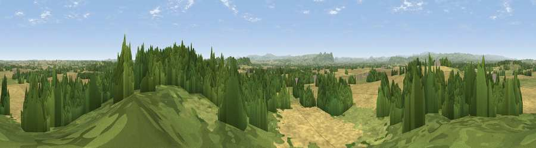

Grug Hill
#6562 in England · top 27% of its area beats it · near Ruyton-XI-TownsWhere it is
The exact computed spot (SJ 37575 23225). Click the marker for map links.
The view, rendered

A 360° render of this exact spot computed from the terrain model, tree cover and land cover — summer colours, afternoon light, calibrated against photographs of famous viewpoints. Real trees, hedges and buildings will differ in detail.
The panorama
Grey silhouette: terrain skyline in each direction (720 bearings, Earth curvature and refraction included). Dashed green: skyline with trees (+15 m) and buildings (+8 m) as obstacles. Blue strip: how far the ground is visible on each bearing.
Where the view opens
Wedge length = distance to the farthest visible ground on that bearing (vegetation-aware). Rings at 10, 25 and 50 km.
What fills the view
44% cropland · 35% woodland · 20% grassland
Angular shares of the visible panorama (visual magnitude), not map area. Landscape diversity 0.47 (0–1 Shannon).
Key numbers
More beautiful places nearby
The staircase of upgrades: each row has a higher view potential than everything closer. Driving times are estimates from straight-line distance, calibrated against real road routing — check an actual route before setting out.
| Place | Direction | Drive | Score |
|---|---|---|---|
| The Cliffe | SE · 3 km | ~8 min | 69.2 |
| Oliver's Point | SSE · 4 km | ~8 min | 71.1 |
| Viewpoint near Melverley | SSW · 11 km | ~20 min | 74.2 |
| Viewpoint near Melverley | SSW · 11 km | ~22 min | 78.2 |
| Viewpoint near Halfway House | SW · 12 km | ~23 min | 83.3 |
| The Lawley | SSE · 28 km | ~45 min | 85.8 |
| Viewpoint near Little Wenlock | ESE · 29 km | ~46 min | 86.6 |
| North Hill | SSE · 86 km | ~111 min | 86.8 |
52.80295, -2.92740 · source: osm peak · position refined by local search. Computed location — check access rights before visiting.